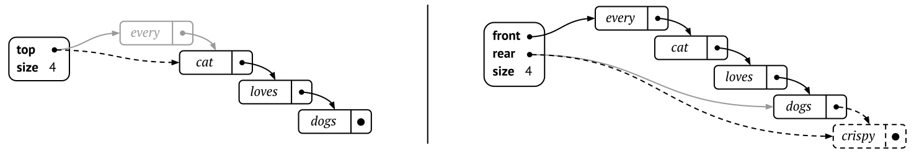

6.2 Linked lists
A linked list is a kind of “distributed” data structure, in the sense that the main list object does not have full information of everything. The only thing that the list knows about is the first element, and instead each element knows which is the next element.
So it is like a line of people facing backwards: the only thing a single person knows is who is standing behind them. A person can never know where in the line they stand, and when it is their turn. And the main “controller” of the list can only see the first person in the line. This means that there is no easy way of knowing the total number of people, if the controller needs that information it has to keep track of the size itself.
Figure 6.1 shows two different representationso of a linked list with four values, where each value is encaspulated in a list node. Each node contains a link to the next node in the list. Notice that the rightmost node does not have any outgoing link.
List nodes are distinct objects, as opposed to cells in an array. Therefore we declare a list node as a “wrapper” around a value, that also contains a pointer to the next node in the list:
datatype Node:
next = null // Pointer to the next node in the list
value // Value for this nodeHow does the list end? Most languages have a designated “null” value
which represents nothing at all – in Java it is called
null, and in Python it is None. So we will use
that: if next is “null” then we have reached the end of the
list. This is denoted by crossing out the next pointer in final node in
the figure above.
A list built from these very simple nodes is called a singly linked list, because each list node has a single pointer to the next node on the list. There are also doubly linked lists, where each node also has a pointer to the previous node, but we will not discuss them in this section. Singly linked lists are all we need to implement stacks and queues.
6.2.1 Stacks as linked lists
Implementing a stack as a linked list is quite simple. Elements are inserted and removed only from the head of the list, so the only information we need is a pointer to the top of the stack.
datatype LinkedStack:
top = null // Pointer to the top node of the stack
size = 0 // Size of the stackNote that we also added a variable size storing the number of elements. This is in theory unnecessary, but without it the only way of knowing the size would be to iterate through the whole stack which takes time.
Figure 6.2 shows a visual representation for a linked stack.
Pushing and popping
Now, so how do we implement the stack operations on this linked list? This is quite straightforward: to push something we have to create a new node and put it at the top, and to pop we delete the current topmost node.
- To push a value, we first create a new Node object wrapping the value. Then we can point the node to the current top node, and after that we reassign the stack top to the new node.
- To pop from the stack, we first have to remember the wrapped value of the current top node. Then we can reassign top to be the node that the top node points to. Finally we can return the value we remembered.
The only think we have to be careful with is the order in which we do things. For example, when popping we cannot start by reassigning the stack top, because then we cannot know the value to return.
Implementing push and pop
Turning push into pseudocode is straightforward, and we can even do all the actions in one single line of code. We also have to increase the size of the stack separately, because there is no way of doing that automatically.
push(stack, value):
stack.top = new Node(value, stack.top)
stack.size += 1
Here we show how to push to a linked stack.
Here is a proficiency exercise about pushing to linked stacks.
Popping is also straightforward from the description above, as long as we remember to decrease the size of the size. The left part of Figure 6.3 shows how this is done visually.
pop(stack):
removed = stack.top
stack.top = removed.next
stack.size -= 1
return removed.valueAfter popping, what will happen with the old top node – will we not have to delete it from memory? If we use a language that has automatic garbage collection (which most high-level languages do), then it will realise that there is nothing that points to the old top anymore, and so the garbage collector will automatically remove the old top. For low-level languages such as C, we need to tell the system to release the memory used by the old top node.

Here we show how to pop from a linked stack.
Here is a proficiency exercise about popping from linked stacks.
6.2.2 Queues as linked lists
Implementing a queue is a little more tricky. It is still easy to remove elements – we can simply reuse the pop operation. But now we do not want to add elements to the front, but instead at the very end. The only way to do that in a linked stack is to traverse all nodes until we find the end, and this is of course very slow if we have very many elements.
The solution is to add an extra pointer to the “controller”, which points to the back of the list. When it comes to queues we also use a different terminology than for stacks – so the first element is called the front (instead of “top”), and the last element is called the rear (instead of “bottom”). Figure 6.2 shows how this can look like.
datatype LinkedQueue:
front = null // Pointer to the front node
rear = null // Pointer to the rear node
size = 0 // Size of the queueEnqueueing and dequeueing
Dequeueing an element from a linked queue is the same as popping from a stack, but we have to remember to update the rear pointer when necessary. That is, if the queue becomes empty after we remove the front node, we have to remember to also delete the rear pointer, otherwise it will point to a non-existing element. (Note that the following code assumes that the queue is non-empty.)
dequeue(queue):
removed = queue.front
queue.front = removed.next
if queue.front is null:
queue.rear = null
queue.size -= 1
return removed.value
Here we show how to dequeue an element from a linked queue.
Here is a proficiency exercise about dequeuing from linked
queues.
But how about enqueueing? Now we want to add the new node to the rear instead of in the front. The important thing to remember is that the “old” rear has to be updated too. So we first have to point the current rear to the new node, and then we can reassign the rear to the new node.
enqueue(queue, value):
newRear = new Node(value, null)
if queue.front is null:
queue.front = newRear
else:
queue.rear.next = newRear
queue.rear = newRear
queue.size += 1Note that we have to treat the empty queue specially: we cannot reassign the current rear (because there is no currect rear yet), but instead we have to update both the front and the rear to the new node. The right part of Figure 6.3 shows a visual representation of enqueueing in a non-empty queue.